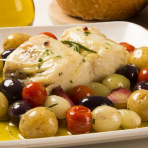
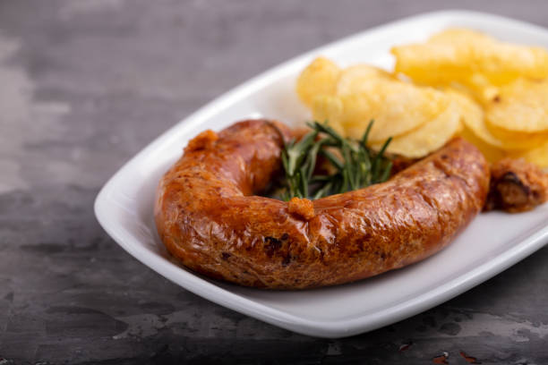

üìñA Hist√≥ria

üìñH√° diversas explica√ß√µes para o curioso nome desta vila. Uns dizem que teve origem no nome de um fidalgo godo ‚ÄúEspadacinta‚Äù, outros no brasão de um fidalgo leon√™s que tinha um freixo e uma espada ou, ainda, na lenda que diz que D. Dinis, rei de Portugal, quando fundou a localidade no s√©c. XIV, amarrou a sua espada a um freixo, antes de se encostar √† √°rvore a descansar. Essa √°rvore, de grande porte, est√° h√° mais de 500 anos no largo principal da vila e merece observa√ß√£o atenta.
üè° A casa da Laidinha em freixo
üè°Descubra o Encanto da Nossa Casa Tradicional no Douro
üè° No cora√ß√£o da paisagem duriense, encontra-se uma casa t√≠pica que une o encanto do passado ao conforto dos nossos dias. Com tr√™s quartos acolhedores, uma cozinha totalmente equipada e uma sala com uma lareira maravilhosa que convida a longas conversas nas noites frias, esta casa √© o verdadeiro retrato da hospitalidade do interior portugu√™s.
Mais do que uma estadia, a casa oferece uma experiência autêntica de turismo rural. Rodeada por um jardim tranquilo, com piscina e uma área de lazer ideal para relaxar ou conviver em família, a casa proporciona o cenário perfeito para descansar, explorar e saborear a vida com calma.
Aqui, os dias começam com o canto dos pássaros e terminam sob um céu estrelado típico do Douro Superior. Seja para um fim de semana de descanso ou umas férias mais longas, este é o lugar onde a natureza, a tradição e o bem-estar se encontram.

Casa Tradicional
Produzido com paixão e tradição.

Produzido com paixão e tradição.

Sabores únicos que contam histórias.
Sabores únicos que contam histórias.
Sabores únicos que contam histórias.
üè°Casa da Laidinha, o seu refúgio no Douro!üè°
Viva uma experiência única em Freixo de Espada à Cinta
arrende a Casa da Laidinha e sinta-se em casa no coração do Douro.
üß≠Atividades na região
üö∂‚Äç‚ôÇÔ∏è Miradouro de Penedo Durão
N.S Douro
Santa da regiao.

üåøO Miradouro da Nossa Senhora do Douro, em Freixo de Espada √† Cinta, oferece uma vista deslumbrante sobre o rio Douro e as paisagens vin√≠colas da região. Situado em um ponto estrat√©gico, o miradouro permite aos visitantes contemplar a beleza natural da √°rea, com as suas encostas √≠ngremes e os vinhedos que se estendem at√© onde a vista alcan√ßa. Um local ideal para momentos de tranquilidade e aprecia√ß√£o da natureza, al√©m de ser um ponto de visita√ß√£o popular para quem passa pela região.
üó∫Ô∏è Barragem de Saucelle


üåø Barragem de Saucelle, localizada no rio Douro, na região de Tr√°s-os-Montes, √© uma importante infraestrutura hidroel√©trica. Constru√≠da nos anos 1980, a barragem forma um grande lago que contribui para a produ√ß√£o de energia e regula o caudal do rio. Al√©m de sua fun√ß√£o energ√©tica, a √°rea ao redor da barragem √© conhecida por sua paisagem deslumbrante, com vistas panor√¢micas sobre o rio e as montanhas circundantes, tornando-se um local popular para atividades ao ar livre, como caminhadas e observa√ß√£o de aves. A Barragem de Saucelle tamb√©m √© um ponto de interesse tur√≠stico, oferecendo aos visitantes a oportunidade de apreciar a beleza natural da região.
ü•æ Miradouro de Mafeito

Casa Tradicional
Quarto
üåøO Miradouro de Mafeito, oferece uma vista panor√¢mica incr√≠vel sobre o rio Douro e a região circundante. Situado em um ponto elevado, √© um local ideal para contemplar a beleza natural da √°rea, com destaque para os vinhedos e as paisagens montanhosas. O miradouro √© um excelente ponto de parada para quem visita a região, proporcionando momentos de tranquilidade e aprecia√ß√£o do cen√°rio.
üçΩÔ∏è Gastronomia
Bacalhau

üçΩÔ∏èO bacalhau √© um prato t√≠pico da gastronomia local, com destaque pela sua qualidade e sabor. Preparado tradicionalmente desfiado, e muitas vezes cozido com batatas, cebolas e outros temperos que real√ßam o sabor único do peixe. A receita, que combina simplicidade e autenticidade, √© um reflexo das tradi√ß√µes culin√°rias da região, sendo muito apreciada tanto pelos habitantes locais quanto pelos visitantes. O bacalhau em Freixo de Espada √† Cinta √© uma das del√≠cias que fazem parte da rica heran√ßa gastron√¥mica do concelho.
Ver mais »Alheira

üçΩÔ∏èA alheira √© um enchido t√≠pico da gastronomia portuguesa, especialmente popular na região de Tr√°s-os-Montes, incluindo em Freixo de Espada √† Cinta. Originalmente criada por judeus portugueses durante o per√≠odo da Inquisi√ß√£o, a alheira foi feita com carne de aves, como frango ou pato, misturada com pão, alho e outros temperos, como forma de disfar√ßar o consumo de carne su√≠na, proibida para os judeus da √©poca. Atualmente, a alheira √© apreciada por seu sabor único e versatilidade. Pode ser grelhada, frita ou assada, e √© frequentemente servida como prato principal ou entrada, acompanhada de arroz, batatas ou salada. A alheira de Freixo de Espada √† Cinta, feita de forma artesanal, √© especialmente valorizada pela sua qualidade e autenticidade.
Ver mais »Medalhao

üçΩÔ∏èO medalhão √© um prato tradicional da gastronomia de Freixo de Espada √† Cinta e de v√°rias regi√µes de Portugal, preparado a partir de cortes de carne, geralmente de vaca, que são macios e suculentos. O medalhão √© um peda√ßo de carne, normalmente lombo ou fil√©, cortado em rodelas grossas e cozido com temperos como alho, vinho, ervas e azeite. O prato pode ser grelhado, frito ou assado, e √© muitas vezes servido com acompanhamentos como arroz, batatas, legumes ou at√© molhos especiais. A receita do medalhão √© simples, mas destaca a qualidade da carne, sendo muito apreciada pela sua textura tenra e sabor intenso. Este prato √© uma verdadeira iguaria para quem visita a região e deseja experimentar a aut√™ntica cozinha portuguesa.
Ver mais »O que beber na região

Vinho tinto
üç∑Vinho tinto √© a bebida resultante da fermenta√ß√£o do suco ou mosto extra√≠do de uvas pretas ou tintas, com macera√ß√£o das cascas no mosto para cor e sabor.
Ver mais »
Vinho branco
üç∑O vinho branco √© produzido sem as cascas das uvas, o que evita a colora√ß√£o escura e d√° origem a tons dourados suaves.
Ver mais »
Vinho rosé
üç∑O ros√© resulta de fermenta√ß√£o com breve contato entre cascas e mosto, conferindo colora√ß√£o rosada e leve sabor t√¢nico.
Ver mais »ü´í O Azeite

ü´í
Azeite Extra Virgem Feito com Amor e Tradição
Nosso azeite é produzido a partir de azeitonas colhidas das nossas próprias oliveiras, garantindo frescor e qualidade em cada gota.
Cultivado com cuidado e paixão, nosso azeite oferece um sabor único e autêntico, perfeito para dar um toque especial em suas receitas.
Por que escolher o nosso azeite?
Produção própria: Colhido diretamente de nossas oliveiras.
Sabor único: Extraído com cuidado para manter suas qualidades naturais.
Feito com amor: Um produto genuíno, criado com dedicação e carinho.
Leve para sua casa o sabor puro e verdadeiro do nosso azeite!


Dúvidas❓ Estamos aqui.
Envie uma mensagem
Entre em contato através do formulario, responderemos todas as suas questãos.